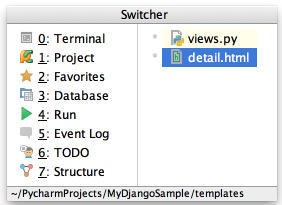

Use the Switcher (&shortcut:Switcher;) to switch between open files and tool windows. Keeping Ctrl pressed, use the Up and Down arrow keys, Tab or Shift+Tab, Alt for navigation; use Delete or BackSpace to close editor tab or hide a tool window.
